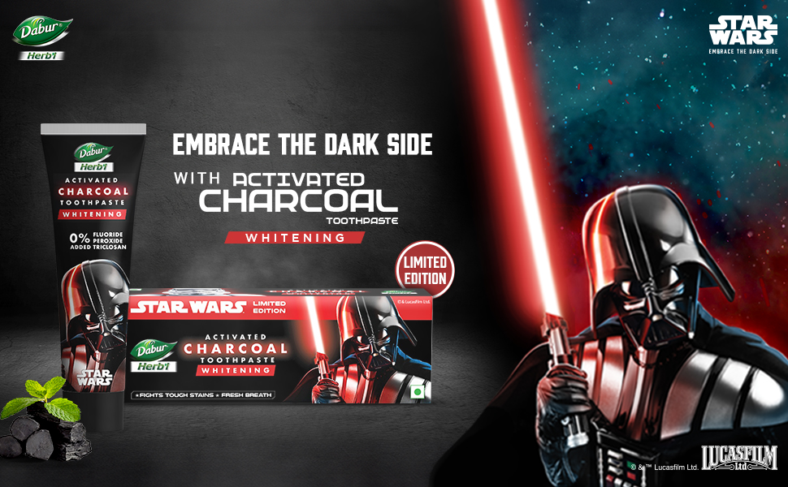

Making a heritage herbal toothpaste irresistible to Gen Z.
Dabur Herb'l had decades of trust and zero cultural currency with 18–28 urban consumers. We changed that by borrowing the most recognisable mythology in the world.

A Rs 2,000 Cr brand that younger India had stopped listening to.
Dabur Herb'l is Dabur's flagship herbal toothpaste line, built on decades of Ayurvedic credibility and distributed across 6 million retail touchpoints. In the oral care category, it competes with Colgate and Sensodyne on the mainstream end, and a wave of D2C herbal challengers — Himalaya, Patanjali, Perfora — on the naturals end.
The brief for 2024: re-establish Herb'l as a desirable, culturally relevant brand among 18–28 urban consumers without abandoning the existing core base. At Tonic Worldwide, I led the Content and Strategy function on the account, working across creative, media, and brand.
Herbal was a category. It was not an identity.
The research pointed to a clear tension: younger urban consumers did not reject herbal claims, they were indifferent to them. "Natural" had become table stakes across every FMCG category. Ayurveda, without a cultural wrapper, read as a parent's brand — something you used because you were told to, not because it said something about you.
The competitive set was doing one of two things: functional proof-points (whiter teeth, stronger enamel) or wellness aesthetics (clean labels, glass jars). Neither was territory Herb'l could credibly or quickly own.
The insight: Gen Z does not want a brand's values. They want to borrow a brand's world. The most powerful worlds in 2024 lived inside IP.
"The force of nature was already in the name. We just needed the right mythology to make it land."
Strategic insight that anchored the campaign
Borrow the biggest IP in the world. Earn its credibility, don't rent it.
We structured the campaign around the "Force of Nature" brand idea — a deliberate bridge between Herb'l's herbal origins and the Star Wars mythology of natural power versus synthetic force. This was not a badge licensing play. The narrative logic had to hold: every creative expression needed to make the IP feel like a natural extension of what Herb'l already was, not a costume it was wearing.
The content system had three layers. Hero content — high-production brand films that established the universe and seeded cultural credibility. Hub content — creator partnerships where influencers in the 18–28 bracket naturalised the brand association through their own voice and format. Hygiene content — always-on social, performance creative, and product posts that kept the campaign live between hero drops.
I used AI-assisted content tooling — Google AI Studio for rapid concept iteration and Claude for copy review — to compress the ideation-to-brief cycle from three days to under twelve hours, giving us more rounds with the client and tighter final executions.
A cross-functional sprint across creative, media, and brand.
I owned the strategy brief, the content architecture, and the creator selection framework. The campaign ran across YouTube (hero films), Instagram Reels (creator amplification), and Meta performance (retargeting with product-linked creative). We coordinated with Dabur's internal brand team on IP compliance — a non-trivial process given the Lucasfilm licensing requirements — and with the media agency on sequencing.
Timeline: 12 weeks from brief to go-live. The brand film launched in Q2 2024 and ran through Q3, with creator content seeded across the same window to build surround-sound without a single spike-and-drop pattern.
Two national awards. A playbook for heritage-brand reinvention.
The campaign won Silver at Exchange4Media Awards 2024 and Bronze at ET Digiplus Awards 2024. Brand consideration among the 18–28 segment showed a measurable lift in the post-campaign brand track.
The downstream effect mattered as much as the headline results. Tonic Worldwide now uses the Hero/Hub/Hygiene content architecture and the IP-as-cultural-bridge strategic framework as a replicable template for heritage brand briefs — applied subsequently on Colgate and Park Avenue accounts.
The AI-assisted ideation workflow I introduced on this account was adopted as standard practice for strategy briefs across the agency, compressing the research-to-hypothesis cycle that previously consumed most of a strategist's week.
IP amplifies. It does not substitute.
The biggest risk in IP-led campaigns is that the licensed world does the talking and the brand goes quiet. Early cuts on the hero film leaned so far into the Star Wars aesthetic that Herb'l could have been swapped out for any product. The fix: enforcing a "remove the IP" test on every execution. If the brand story still held without the Star Wars frame, the frame was earning its keep. If it collapsed, we rewrote.
The discipline that saved the campaign was having a clear creative strategy brief that the entire team — including external creators — could interrogate. Without it, licensed campaigns become mood boards. With it, they become arguments.